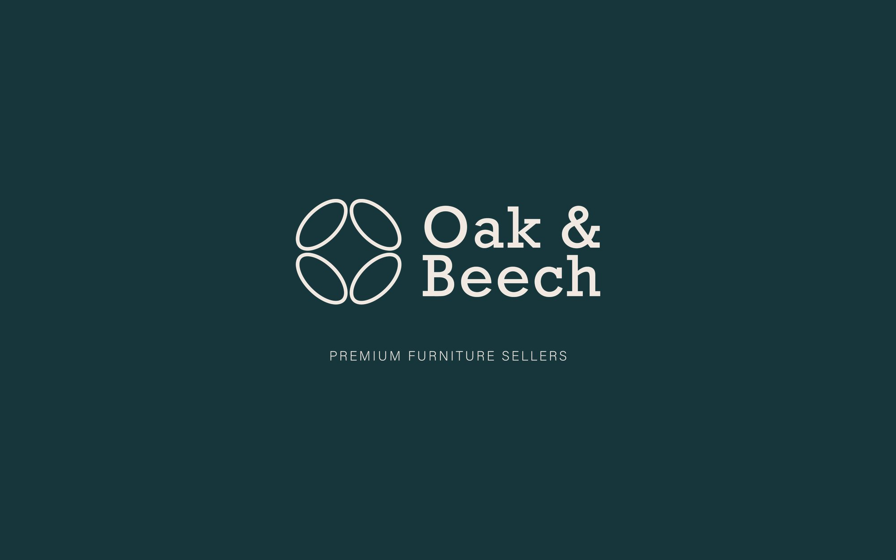
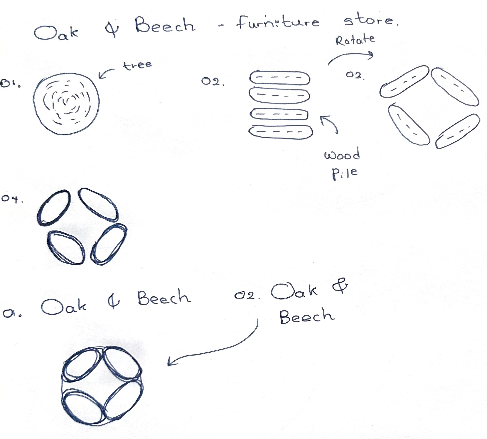

Case file · Brand identity
Oak & Beech
A calm, warm identity for a premium furniture seller that makes honest pieces from natural wood.

- Project
- Brand identity and guidelines
- Client
- Oak & Beech, premium furniture sellers (concept brand)
- Tools
- Adobe Illustrator, Adobe Photoshop
- Year
- 2026
01The brief
Oak & Beech makes honest, well-crafted furniture from natural wood. Named after two of the most trusted hardwoods, the brand stands for partnership, patience and quality that lasts for generations. It needed an identity that feels less like a showroom and more like home.
02The idea
Four leaves joined into a circle: two pairs for oak and beech, meeting in the middle like people around a table. A deep pine green from the woodland, oak tan and sage for warmth, and soft linen that lets every piece breathe.
03Sketches
